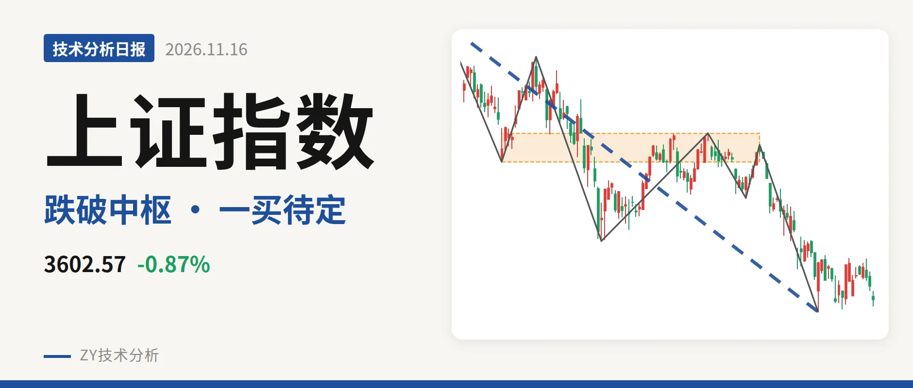
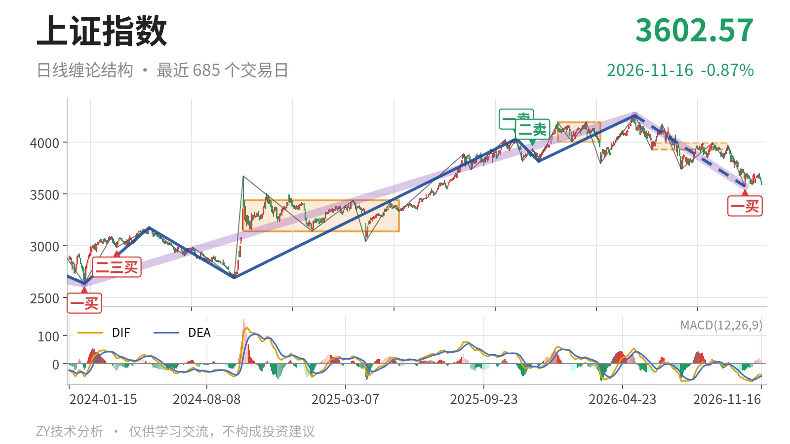
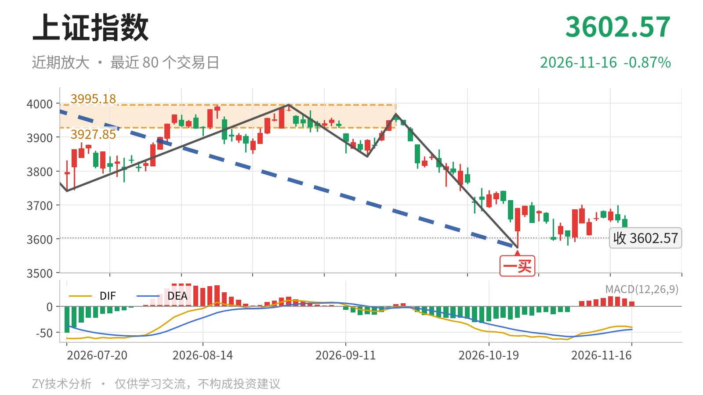

上证指数｜跌破中枢下沿，三卖关注3928点

最近日线中枢 3927.85—3995.18点，收盘位于中枢之下
一句话：价格低于中枢下沿，反弹未成笔，结构偏弱。
🌊 走势结构：大级别上攻未断，日线调整仍在中继
更大级别看，2024年2月5日至2026年5月14日的上涨走势从2635.09点到4258.86点，上涨约61.6%，这轮上攻还没有结束。但5月14日至10月23日的日线下跌线段还在延续，从4258.86点跌到3574.27点，跌约16.1%。10月26日以来的反弹只是线段内部的反抽，尚未形成日线新笔，因此当前只能按下跌段中继看待，不能判定回调终结。最新DIF -40.4仍在零轴之下，日线反弹暂时受制。

🧭 中枢与位置：价格跌破最近中枢，中枢下移
最近一个日线笔中枢是6月8日至9月22日的中枢，下沿3927.85点、上沿3995.18点，该中枢还没完成。最新收盘3602.57点低于下沿约8.3%。相较1月14日至3月23日的中枢4002.78—4190.87点，中枢位置明显下移。中轴3961.51点距收盘价还有约359点，价格已经跌出中枢，若反抽不能回到3928点上方，就是回抽不进中枢的结构。
🎯 买卖点：一买暂只对应小级别，三卖风险未解除
日线笔级别上，2025年11月14日的一卖在4034.08点，12月8日的二卖在3936.31点，高点一个比一个低。10月23日出现一买3574.27点，所在下跌笔已经结束。10月26日以来的反弹最高到3708.20点，最低3580.38点，尚未形成日线新笔，因此这个一买暂只能看作小级别反抽。反抽若回不到3928点上方，中枢下沿反而可能构成三卖。

⚖️ 背驰：指标背离不完整，下行动能未充分衰竭
比较同向两笔下跌：6月23日至7月20日的下跌笔从4175.35点跌到3741.11点，绿柱面积289，DIF低点-61.8；9月22日至10月23日的下跌笔从3967.68点跌到3574.27点，绿柱面积347，DIF低点-57.1。价格新低，DIF低点抬高，但绿柱面积反而扩大。这种“新低不新弱”并不标准，底背驰没有形成完整共振。10月23日一买更像是小级别背驰，不是日线级别转折已经成立的结构。
📍 关键位置观察：反抽看3928点，跌破3574点则下跌段延续
结构上，上方压力看3928点附近，也就是6月8日至9月22日中枢下沿3927.85点。反抽如果回不到3928点上方，结构上构成三卖，5月14日以来的下跌段不会结束。下方支撑看3574点附近，这是10月23日一买的位置。如果后续再次跌破3574点，这个一买被破坏，下跌段继续延续；如果重新站上3928点，下跌更可能只是中枢扩展。当前价格低于中枢下沿、反弹未成笔，结构明显偏弱：弱在价格仍在最近中枢之外，反抽还未形成日线笔。
⚠️ 本文为基于公开行情数据的缠论技术结构记录，由程序自动计算并生成，仅供学习交流，不构成任何投资建议。市场有风险，投资需谨慎。